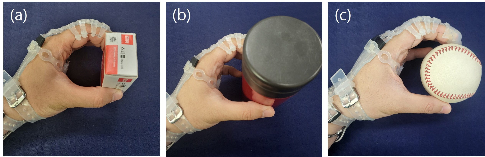

← 전체 연구 보기웨어러블 로봇 장갑의
상자, 병, 야구공을 쥐는 실제 장갑 실험.
03 / WEARABLE ROBOT GLOVE
웨어러블 로봇 장갑의
물체 크기 추정
물체를 쥐는 동안의 모터 엔코더와 와이어 장력으로 물체 크기와 파지력을 추정하는 연구에 참여했습니다. 구동 제어와 측정 장치를 구성하고, 크기가 다른 물체를 이용해 실험 데이터를 수집했습니다.

장갑 구동
2 motors
굽힘과 폄을 위한 텐던 구동
생활 물체 실험
3종
상자 · 병 · 야구공
프로젝트 기간
2021–2024
2021.07–2024.02
구동부의 정보로 파지 상태를 읽다
텐던 구동 장갑은 모터가 와이어를 당겨 손가락의 굽힘과 폄을 보조합니다. 물체 크기에 따라 손이 접촉하는 시점과 필요한 와이어 이동량이 달라집니다. 이 관계를 이용해 착용부에 추가 센서를 부착하지 않고 구동부의 정보로 물체 크기를 추정했습니다.
연구 범위
Exo-Glove Poly II 플랫폼을 사용한 연구입니다. 이 프로젝트에서 담당한 범위는 측정 장치 제작, 구동 제어와 실험 데이터 수집입니다.
Exo-Glove Poly II 플랫폼을 사용한 연구입니다. 이 프로젝트에서 담당한 범위는 측정 장치 제작, 구동 제어와 실험 데이터 수집입니다.
측정 장치와 구동 제어를 구성하다
와이어 장력 측정 장치, 크기를 조절할 수 있는 파지력 측정 장치와 구동 모터 제어를 담당했습니다. 장력은 구동부에서 측정하고, 파지력 기준값은 물체 역할을 하는 별도의 측정 장치에서 얻었습니다.
두 모터로 장갑의 굽힘과 폄을 구동하며 엔코더와 장력 데이터를 수집했습니다. 조절형 실험 물체를 사용해 물체 크기에 따른 구동 상태와 파지력의 관계를 확인했습니다.
접촉 시점에서 물체 크기와 파지력으로
모터 엔코더와 와이어 장력으로 손과 물체의 접촉 시점을 찾고, 이를 물체 크기 추정에 사용했습니다. 연구에서는 LSTM과 선형회귀를 연결한 추정 흐름을 검토하고, 추정한 크기를 파지력 추정의 입력으로 활용했습니다.
엔코더·장력 측정→접촉 시점 검출→물체 크기 추정→파지력 추정
세 가지 생활 물체로 확인하다
조절형 실험 물체에 이어 상자, 병과 야구공을 사용했습니다. 크기와 형상이 다른 물체를 반복해서 쥐며 추정값을 비교했습니다.
| 물체 | 비교 치수 | 크기 |
|---|---|---|
| 상자 | 짧은 변 | 4.1 cm |
| 병 | 지름 | 6.2 cm |
| 야구공 | 지름 | 7.23 cm |
자료와 해석연구 포트폴리오와 실험 원본을 바탕으로 참여 역할과 장치를 정리했습니다. 전체 장갑 플랫폼의 개발과 본인의 계측·제어 기여를 구분했습니다.